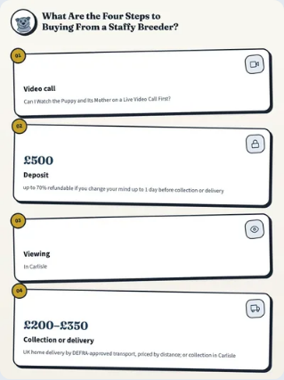
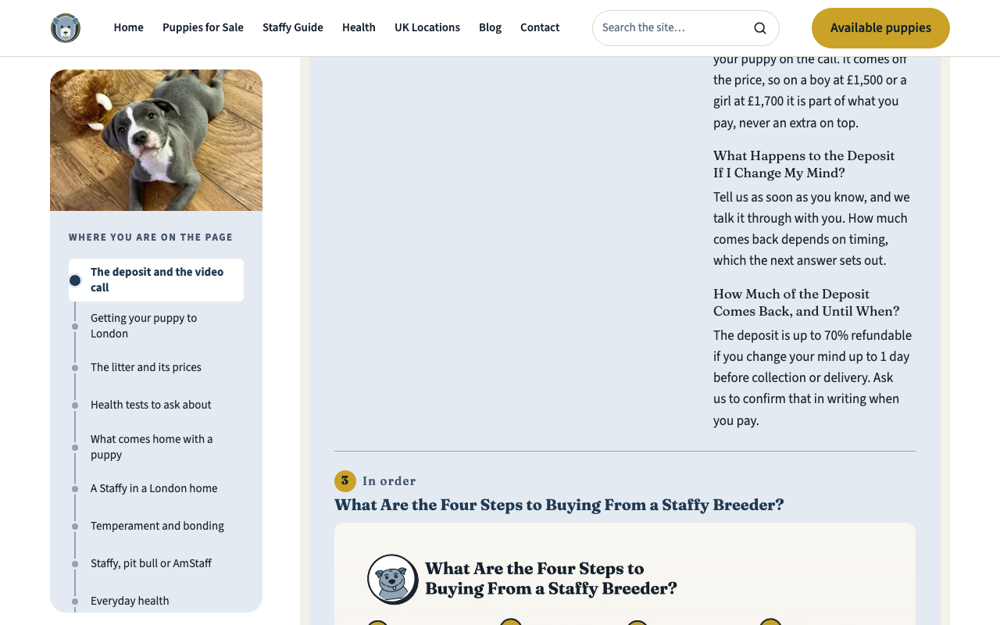
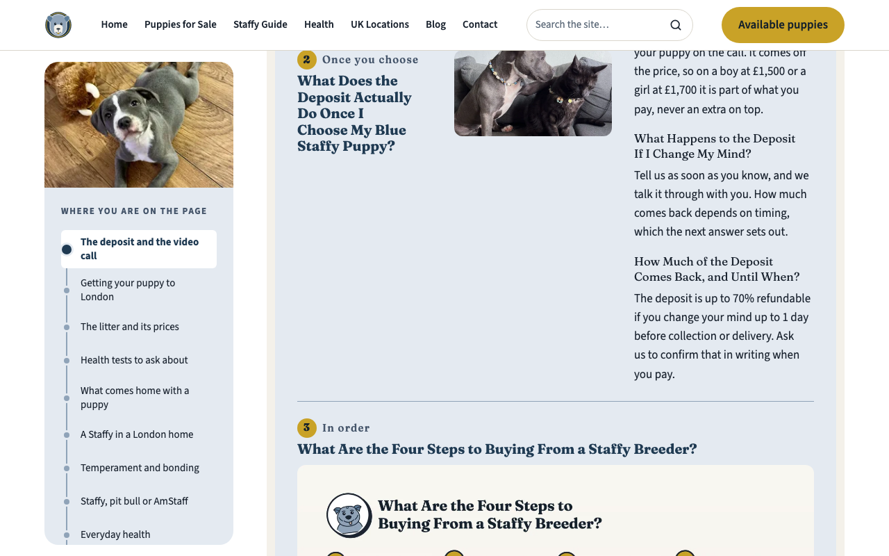
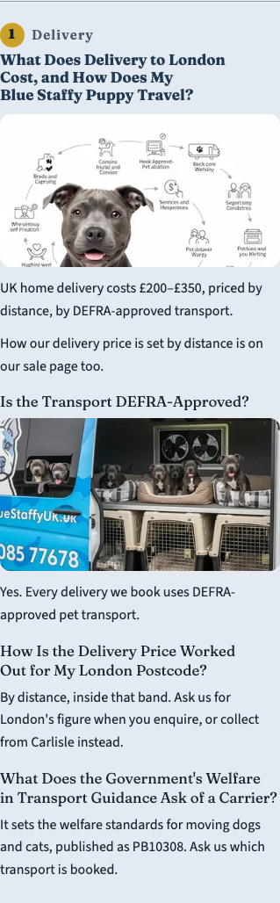
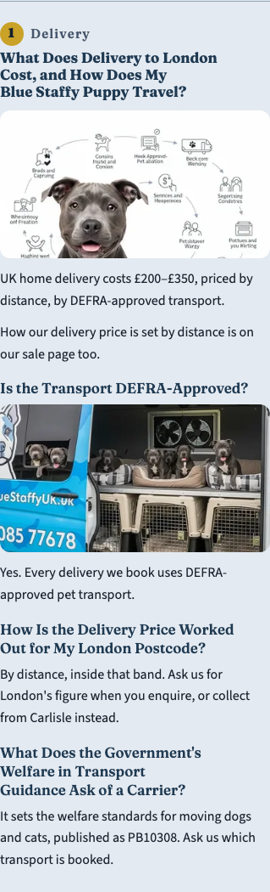
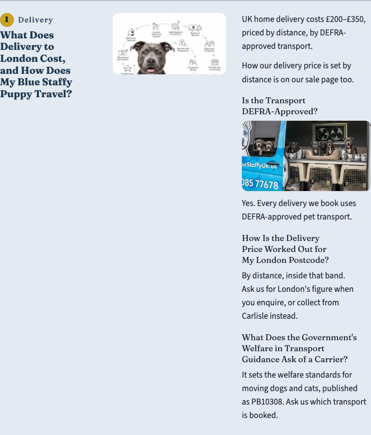
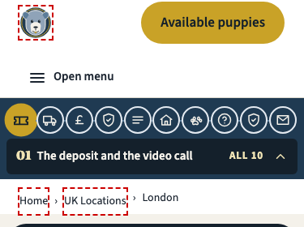
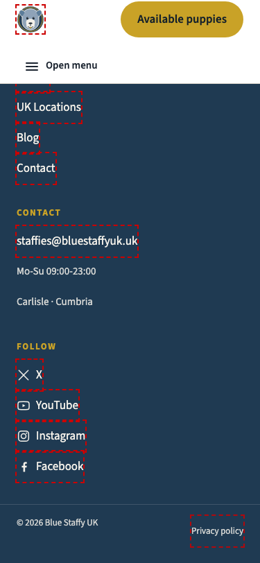

London page · Harden pass (impeccable) · 3 October 2026
The impeccable pass fixed 9 defects on the London page without changing any words, links or images: an AA contrast failure, small tap areas, a banned side stripe, heading spacing, the section dial, and 21 oversized images (35 smaller copies added beside the originals). These four would change how the page looks, so each one waits for you.
What's wrong: on a phone each infographic is drawn about 319px wide, so its small labels come out at roughly 5–7px. The prose beside each one carries the same facts, but the picture itself can't be read. The fix: re-draw the six phone versions with a phone-sized type scale, so labels land at 14px or more on screen. That makes new image files, so they come back to you through the Asset Gate as drafts before anything is published. The bake check also gets fixed: it measured text at the file's own width, not the width it's shown at.

What's wrong: from 1024px wide, each chapter puts the heading, the photo and the prose in three columns. The prose runs two to three times taller, leaving tall empty space under the heading and photo. The fix: the heading and photo stay in view (sticky) while you read the prose beside them. Nothing moves on a phone.


What's wrong: the chapters' H4 to H6 headings are regular weight in body ink, so on a phone they look lighter than the paragraph under them. The site's own heading style is bold in brand steel. The fix: weight 600 in brand steel, matching the rest of the site.



What's wrong: the logo (40×40), the breadcrumb links (31px tall) and three footer links (29–43px wide) are under the 44px comfortable tap size. They pass the legal minimum (24px), and they're shared by every page, so changing them repaints the whole site. The fix: pad each to 44px; nothing changes visually except slightly roomier spacing.

